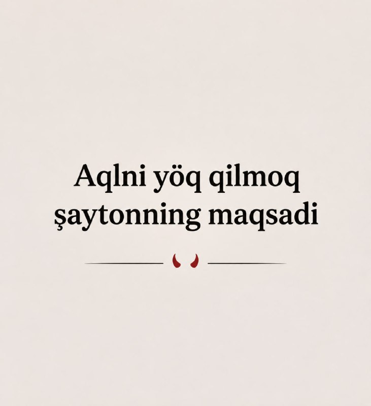

Aqlni yöq qilmoq şaytonning maqsadi

Aql insonga berilgan eng qimmatli neʼmatdir. Alloh taolo yaratgan narsalarning eng birinçilaridan biri aynan aql bölgan ekan. U aql Aqli kull deb atalib, butun insoniyatga ana şu aqlning juzʼlari, yaʼni qismlari berilgan ekan.
Aql miyada joylaşgan bölib, u göyoki çiroqdir. Bu çiroq Tangri taoloning inoyati ila yonadi va hosil bölgan nur köngilga tuşadi. Natijada, köngil yorişadi va köngilning yorişuvidan uning ham içidagi ikkinçi aql – lub tiriladi. Ana şu lub sababli odamiyzod Xudoni taniydi. Agar lubga nur yetmasa, odamzod Xudoni tanimaydi.
Qalb nozik bir harir parda ila ihotalangan. Bu pardaning nomi fuaddir. U parda oyna kabi içkariga nurni ötkazib beradi. Içkarida suvaydo bor. Suvaydoning vazifasi nurni qabul qiliş hamda muşohada etişdan iborat. Suvaydo bu muşohada oqibatida qiziydi va lub tiriladi. Lub qalbning qoq markazi bölib, Tangrining sifatlari va zoti tajalliysi aynan unda zuhur qiladi.
Miyaning içida joylaşgan aqlning nomi aqldir. Uning faoliyatidan fikr paydo böladi.
Qalb içidagi aqlning ismi lubdir, uning faoliyatidan kaşf, hikmat va laduniy ilmlar paydo böladi.
Dunyoga oid hisob-kitoblar, jismga oid kasallik va sihhatni miyadagi aql idrok qiladi.
Ruhning kirlanişi yoki nafsning ğaflatini lub köra oladi.
Inson zotining botil, yaʼni yomon işlari, Xudo taqiq urgan işlar gunoh deb aytiladi hamda gunohlar sababli qalbning yuzasini kir bosadi.
Bu kir natijasida odamiyzod miyadagi aqli bilan qança ilgari ketsa-da, heç bir yutuq kasb etmaydi.
Miyadagi aql moddiy dunyo ilmlarini kaşf qiliş bilan şuğullanadi, qalbdagi aql malakut olami sirlarini muşohada qiliş bilan maşğul.
Şariat miyadagi aqlning nazoratidagi iş, tariqat qalbning içidagi aqlga oiddir.
Tariqat hosilasi bölmiş maʼrifat va haqiqat ham qalbning içidagi lubga beriladi.
Ikki aqlning inson hayotida öta muhim örni bor.
U ikki aql bir-birini rad qilmaydi.
Balki ikkisi bir-birini töldiradi. Ammo ustunlik, şubasiz qalbdagi aqlga oid. Çunki qalbdagi aql insonni najotga yetaklaşi aniq, miyadagi aql esa halokatga taşlaşi ehtimoli bor.
Şayton aql çiroğini öçirişga qasd etgan.
Buning uçun u insonlarga aroq içiradi va fahş qildiradi.
Bu ikki narsa qalbni zulmatga taşlasa-da, miyadagi aqlga daxl qilişi qiyin.
Endi miyadagi aqlni ham öldiriş uçun navbatdagi vosita işga tuşdi. Uning nomi — yasama aql, yaʼni sunʼiy intellekt.
Odamlar bugun bolalarini sunʼiy intellektdan qutqarişi mumkin bölgan barça çoralarni işlatişlari kerak.
Çunki sun’iy ong natijasida odam jismidagi aql çiroği butkul sönişi heç gap emas. Natijada, insoniyat öz rutbasidan ayriladi va iş nihoyalaydi.
Aqlni asraş bugungi zamonning asosiy muammosidir.
Akrom MALIK